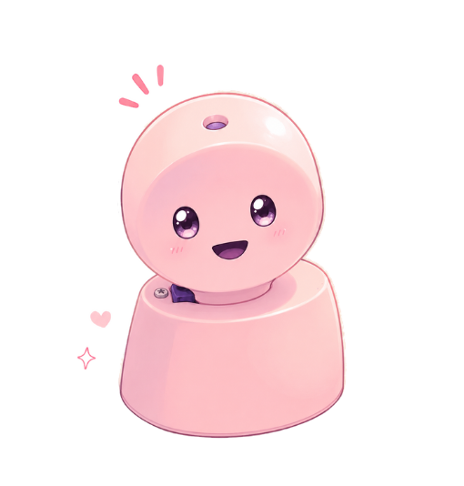

Eixo Escolas · Missão 01
VAMOS DESPERTAR A ARDUNINA?
A nossa robozinha vai ganhar olhos, voz e movimento, uma parte de cada vez! Em cada missão, você monta as peças, corrige 1 erro no código e envia para o Arduino.

3 MISSÕES PARA DESPERTAR!
Monte, corrija e envie. Você consegue? Como o código funciona?
01 · Visão
Acenda os olhos (LEDs)
02 · Voz
Dê som à boca (buzzer)
03 · Movimento
Mova o pescoço (servo)
2
Complete as 3 missões
Siga a ordem: olhos, voz e movimento. Em cada missão, monte as peças, corrija o erro e envie o código. Depois, volte aqui para ver seu progresso.
Visão: acender os olhos
Voz: produzir o som
Movimento: mover o pescoço
Missões concluídas! A Ardunina despertou!
Agora baixe o código completo, que junta olhos, voz e movimento, para testar na robô de verdade.